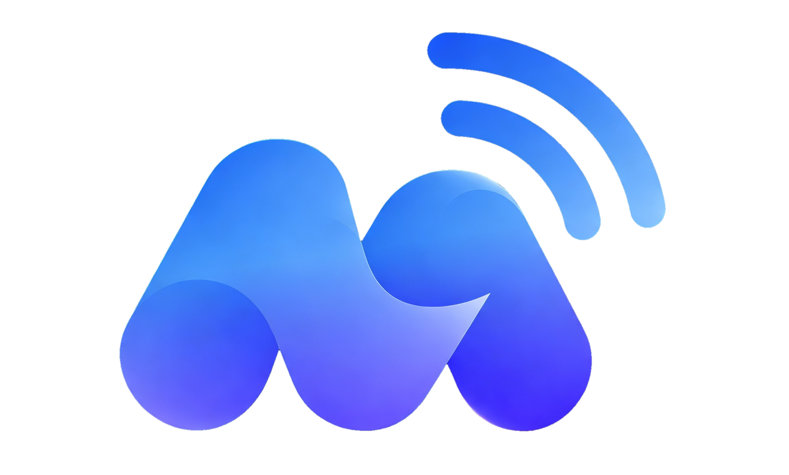

COMUNICACIÓN SIN BARRERAS
Tu voz a través
del tacto
Morsi es una propuesta de comunicación accesible que permite transformar pulsaciones en mensajes mediante el código Morse, facilitando una nueva forma de expresar ideas y comunicarse.
Comenzar a comunicarExplora una nueva forma de comunicarte con Morsi.
Cada señal comunica

Tecnología · Inclusión · Comunicación